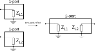
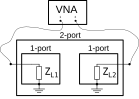
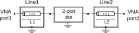
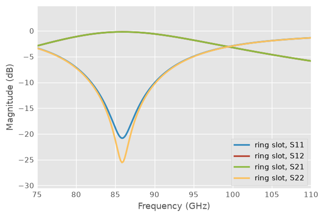
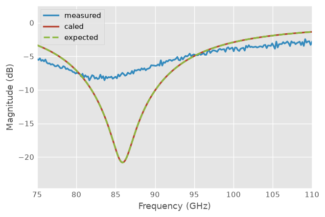

SOLT#
This little example demonstrates how to use scikit-rf for a basic SOLT calibration.
Basic Use#
Imports#
First we import skrf, the SOLT class, and setup matplotlib plotting.
[1]:
import skrf as rf
from skrf.network import two_port_reflect
rf.stylely()
Typical SOLT Procedure#
A two-port calibration is accomplished in an identical way to one-port. However, scikit-rf only accepts measurement results as two-port networks, even for reflective and load standards.
Measure Two Standards Separately#
If you don’t have two sets of calibration standards, no worries! It’s possible to measure reflective standards on each port separately. For example, connect a short to port-1, save a one-port measurement as short.s1p, then move the same short to port-2, save another one-port measurement as short2.s1p or similar.
Next, you can forge a two-port Network from two one-port Network using the function skrf.network.two_port_reflect:
short = rf.Network('ideals/short.s1p') # a 1-port Network
shorts = two_port_reflect(short, short) # a 2-port Network
The function skrf.network.two_port_reflect does this:

Measure Two Standards Simultaneously#
Often, it’s possible to measure two reflective standards simultaneously, then to directly store your data as a two-port network. For example, connect the first short standard to port-1 and a second short to port-2, and save everything as a two-port measurement, such as short,short.s2p or similar.

Isolation Calibration#
For Open, Short, and Load calibrations, even though the inputs are supplied to scikit-rf as 2-port networks with four S-parameters in each, \(S_{21}\), and \(S_{12}\) are ignored - by definition, both are equal to 0. Only \(S_{11}\) and \(S_{22}\) are used, this is true even for a Load-Load measurement. Thus, no isolation calibration takes place by default.
If isolation calibration is needed, one must explicitly tell scikit-rf to do so. Specifically, SOLT() class accepts an optional parameter isolation for this purpose. To calibrate isolation, set this parameter to a two-port network, representing the measurement result with loads on both ports.
Code#
The typical workflow for a SOLT calibration is:
# a list of Network types, holding 'ideal' responses
my_ideals = [
rf.Network('ideal/short, short.s2p'),
rf.Network('ideal/open, open.s2p'),
rf.Network('ideal/load, load.s2p'),
rf.Network('ideal/thru.s2p'),
]
# a list of Network types, holding 'measured' responses
my_measured = [
rf.Network('measured/short, short.s2p'),
rf.Network('measured/open, open.s2p'),
rf.Network('measured/load, load.s2p'),
rf.Network('measured/thru.s2p'),
]
## create a SOLT instance
cal = SOLT(
ideals = my_ideals,
measured = my_measured,
isolation = rf.Network('measured/load, load.s2p'),
# isolation calibration is optional, it can be removed.
)
## run, and apply calibration to a DUT
# run calibration algorithm
cal.run()
# apply it to a dut
dut = rf.Network('my_dut.s2p')
dut_caled = cal.apply_cal(dut)
# plot results
dut_caled.plot_s_db()
# save results
dut_caled.write_touchstone()
Example#
The following example illustrates a common situation: a DUT is connected to a VNA using two cables of different lengths. The purpose of the calibration is to move the reference plane do the DUT, that is to remove the effect of the cables from the measurement.

In the example below, the DUT is already known, just to be able to confirm that the calibration method is working at the end. Of course, in reality, the DUT is generally not known…
[2]:
dut = rf.data.ring_slot
dut.plot_s_db(lw=2) # this is what we should find after the calibration

The ideal component Networks are obtained from your calibration kit manufacturers or from modelling.
In this example, we simulate ideal components from transmission line theory. We create a lossy and noisy transmission line (for the sake of the example).
[3]:
media = rf.media.DefinedGammaZ0(frequency=dut.frequency, gamma=0.5 + 1j)
Then we create the ideal components: Short, Open and Load, and Through. By default, the methods media.short(), media.open(), and media.match() return a one-port network, the SOLT class expects a list of two-port Network, so two_port_reflect() is needed to forge a two-port network from two one-port networks (media.thru() returns a two-port network and no adjustment is needed).
Alternatively, the argument nports=2 can be used as a shorthand for this task.
[4]:
# ideal 1-port Networks
short_ideal = media.short()
open_ideal = media.open()
load_ideal = media.match() # could also be: media.load(Gamma0=0)
thru_ideal = media.thru()
# forge a two-port network from two one-port networks
short_ideal_2p = two_port_reflect(short_ideal, short_ideal)
open_ideal_2p = two_port_reflect(open_ideal, open_ideal)
load_ideal_2p = two_port_reflect(load_ideal, load_ideal)
# alternatively, the "nport=2" argument can be used as a shorthand
# short_ideal_2p = media.short(nports=2)
# open_ideal_2p = media.open(nports=2)
# load_ideal_2p = media.match(nports=2)
Now that we have our ideal elements, let’s fake the measurements.
Note that the transmission lines are not symmetric in the example below, to make it as generic as possible. In such case, it is necessary to call the flipped() method to connect the ideal elements on the correct side of the line2 object.
[5]:
# left and right piece of transmission lines
line1 = media.line(d=20, unit='cm')**media.impedance_mismatch(1,2)
line2 = media.line(d=30, unit='cm')**media.impedance_mismatch(1,3)
# add some noise to make it more realistic
line1.add_noise_polar(.01, .1)
line2.add_noise_polar(.01, .1)
# fake the measured setup
measured = line1 ** dut ** line2
# fake the calibration measurements
# Note the use of flipped() on line2
open_measured = two_port_reflect(line1 ** media.open(), line2.flipped() ** media.open())
short_measured = two_port_reflect(line1 ** media.short(), line2.flipped() ** media.short())
load_measured = two_port_reflect(line1 ** media.load(Gamma0=0), line2.flipped() ** media.load(Gamma0=0))
thru_measured = line1 ** line2
We can now create the lists of Network that the SOLT class expects:
[6]:
# a list of Network types, holding 'ideal' responses
my_ideals = [
short_ideal_2p,
open_ideal_2p,
load_ideal_2p,
thru_ideal, # Thru should be the last
]
# a list of Network types, holding 'measured' responses
my_measured = [
short_measured,
open_measured,
load_measured,
thru_measured, # Thru should be the last
]
## create a SOLT instance
cal = rf.calibration.SOLT(
ideals = my_ideals,
measured = my_measured,
)
And finally apply the calibration:
[7]:
# run calibration algorithm
cal.run()
# apply it to a dut
measured_caled = cal.apply_cal(measured)
Let’s see the results for S11 and S21:
[8]:
measured.plot_s_db(m=0, n=0, lw=2, label='measured')
measured_caled.plot_s_db(m=0, n=0, lw=2, label='caled')
dut.plot_s_db(m=0, n=0, ls='--', lw=2, label='expected')

[9]:
measured.plot_s_db(m=1, n=0, lw=2, label='measured')
measured_caled.plot_s_db(m=1, n=0, lw=2, label='caled')
dut.plot_s_db(m=1, n=0, ls='--', lw=2, label='expected')

The caled Network is (mostly) equal the DUT as expected:
[10]:
dut == measured
[10]:
False
[11]:
dut == measured_caled # within 1e-4 absolute tolerance
[11]:
True